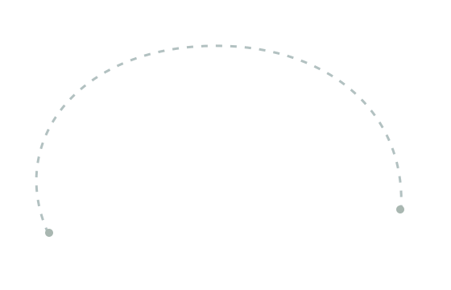
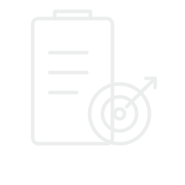

Minimize Fraud Loss
Reduce fraudulent transaction value and downstream loss.
Define the problem, objectives, KPIs and analytical approach for the Financial Fraud Risk Analytics & Transaction Decisioning project.


Reduce fraudulent transaction value and downstream loss.
Avoid unnecessary friction for legitimate customers.
Keep manual-review workload within operational capacity.
Monitor performance and control effectiveness.

End-to-end decisioning pipeline that translates data and analytics into consistent, explainable actions.
 GitHub
GitHub